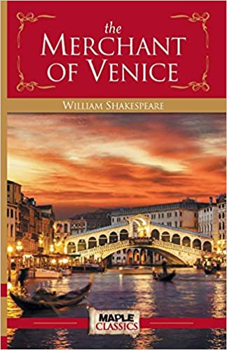
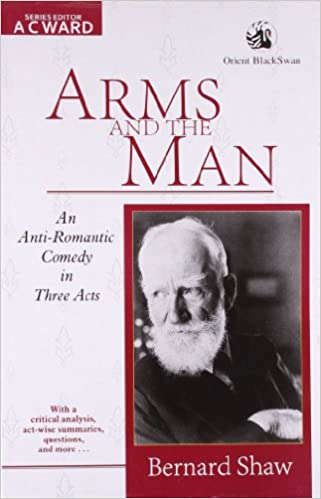
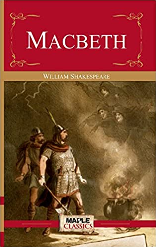
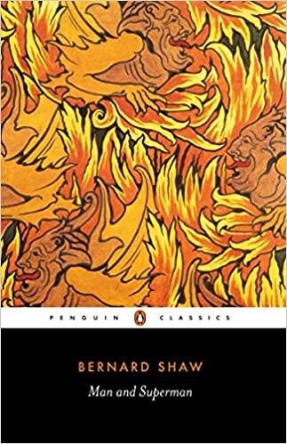
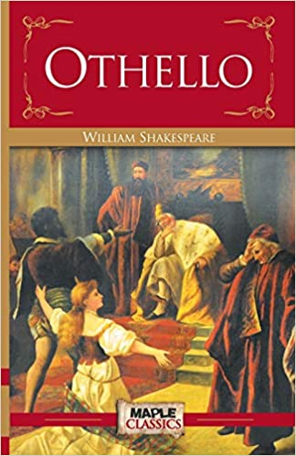

 The Merchant of Venice ranks with Hamlet as one of the most frequently performed dramas. Written sometime between 1594 and 1598,the play is primarily based on a story in Pecorone,a collection of tales and considerable debate concerning the dramatist's intent in the The Merchant of Venice anectodes by the fourteenth-century Italian writer Glovanni Fiorentino.There is because,although it conforms to the structure of a comedy,the play contains many tragic elements. One school of critics maintains the drama is fundamentally allegorical,addressing such themes as triumph of mercy over justice,New Testament forgiveness over Old Testament law, and love over material wealth.Another group of commentators,observing several ambiguities in the play's apparent endorsement of christian values,contends that Shakespeare actually censures Antonio and the Venetians who oppose Shylock.In essence,these critics assert that the Christians' discrimination against Shylock which ultimately results in his forced conversion from Judaism,contradicts the percepts of love and mercy.Other commentators suggest that Shakespeare intentionally provided for both interpretations of the drama:although the playwright does not entirely support Shylock,they contend,neither does he endorse the actions of Antonio and other Venetians in their punishment of the Jew. Online Buy
 George Bernard Shaw was written this book.This book was published April 21,1894.This book was actually historical romantic with comedy.Plot of this book is 1885,Serbo-Bulgarian.Actually i think that book is so interesting because in this book,view of love and war is the main think with comedic.Bluntschli is a Swiss soldier who fall in love with Raina but she is already angst with Sergius,but Sergius love louka.At last the comedy of the story turn into tragedy and story builds as we wonder how this love triangle unravel.i think no one can know what hepped at last without finishing the story.This book is so interesting.The tragedy of this story is full of comedy. Bernard Shaw prove that a romantic story can express with comedy. Online Buy
 Macbeth,a Scottish baron,and his wife plot regicide after witches predict that Macbeth is to become king.Three witches tell the Scottish general Macbeth that he will be King of Scotland.Encouraged by his wife,Macbeth kills the king,becomes the new king, and kills more people out of paranoia.Civil war erupts to overthrow Macbeth,resulting in more death.Macbeth was an enjoyable play for a majority of its Acts.Although the ending didn't land the way I had hoped, I might be overlooking some obvious reasons to the events playing out the way they did.If I learned anything from the story,it's not to take things out of proportion. Online Buy
 Man and Superman is a four-act drama book written by George Bernard Shaw in 1903. The series was written in response to a call for Shaw to write a play based on Don Jualn theme. Man and Superman opened at the Royal court theatre in London on 23 May 1905.Mr.Whitefield has recently died, and his will indicates that his daughter Ann should be left in the care of two men,Roebuck Ramsden and John Tanner.Ramsden,a venerable old man,distrusts John Tanner, an eloquent youth with revolutionary ideas,whom Shaw's stage directions describe as "prodigiously fluent of speech,restless,excitable(mark the snorting nostril and the restless blue eye,just the thirty- secondth of an inch too wide open),possibly a little mad." Online Buy
 Othello is undoubtedly a brilliant piece of literature and theatre;it's a riveting story the worst parts of human nature that culminates in a satisfying tragic conclusion.And Iago is undeniably a brilliant character;his masterclass in manipulation is mesmerizing to watch. But it was a particularly interesting play to read amidst the resurgence of the Black Lives Matter movement,as discussions about Black representation in the media are currently in our cultural foreground.There's a contradiction in the heart ofOthellothat makes for unsettling reading:Iago,while ostensibly the villain to Othello's tragic hero,is also the character that the audience has the strongest connectionwith through a sries of prominent soliloquies(that Othello himself is denied);Iago is also a flagrant racist.Recpnciling these two truths about Iago is a challenge,and no matter which way you look at it,it doesn't sit comfortably as we circle this 'is this play racist' question. Online Buy